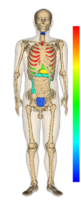
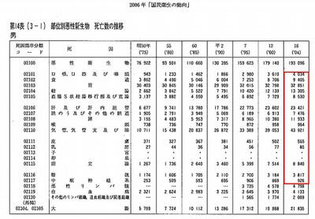

Step3: Make a heatmap of a human body
Output of the sample program


Reference： Kokumin-eisei no Doko (Journal of health and welfare statistics), Tokyo, 2006 (in Japanese)
Mortality data in 2006 (enclosed by the red rectangle) are displayed on BodyParts3D.
Skin and breast are excluded.
Numerical values (mortality) are converted into blue, green, yellow and red
in ascending order.
Explanation of the sample code
See also Javadoc for details of each methods.
line 17： Display a color bar.
line 39-107： Set a numerical value to the organ with setScalar() method
Related properties of AgOrgan
Property
|
Description
|
Default value
|
Setter example |
Numerical value to map
|
Real number (Double) |
0.0 |
setScalar(100) |
Related properties of AgProp
Property
|
Description
|
Default value
|
Setter example |
Range of numerical values
|
Outliers are rounded to the border value (i.e. min or max value) to prevent the map from being the same color.
|
null |
setScalarRange(0,100) |
Sample code
1 import jp.dbcls.ag.AgClient;
2 import jp.dbcls.ag.AgOrgan;
3 import jp.dbcls.ag.AgProp;
4
5 import java.util.ArrayList;
6
7 /**
8 * Step3 数値を色情報に変換して臓器にマップし、がんの部位別死亡数マップを作成する。
9 */
10 public class Step3 {
11 static AgProp prop = null;
12
13 static ArrayList organs = null;
14
15 public static void main(String[] args) throws Exception {
16 prop = new AgProp();
17 prop.setWinSize(240, 640);
18 /** カラーバーを表示します。 * */
19 prop.setColorBarOn(1);
20
21 organs = new ArrayList();
22 AgOrgan o;
23
24 /** 体幹と全身の骨と皮膚を背景として描画する * */
25 o = new AgOrgan();
26 o.setName("trunk"); // 体幹
27 organs.add(o);
28
29 o = new AgOrgan();
30 o.setName("skin"); // 皮膚
31 o.setOpacity(0.2);
32 organs.add(o);
33
34 o = new AgOrgan();
35 o.setName("bone"); // 骨
36 organs.add(o);
37
38 /** がんの部位別死亡数をsetScalar()でセットする * */
39 o = new AgOrgan();
40 o.setName("throat"); // 咽頭
41 o.setScalar(4034);
42 organs.add(o);
43
44 o = new AgOrgan();
45 o.setName("esophagus"); // 食道
46 o.setScalar(9405);
47 organs.add(o);
48
49 o = new AgOrgan();
50 o.setName("stomach"); // 胃
51 o.setScalar(32851);
52 organs.add(o);
53
54 o = new AgOrgan();
55 o.setName("colon"); // 結腸
56 o.setScalar(13305);
57 organs.add(o);
58
59 o = new AgOrgan();
60 o.setName("rectum"); // 直腸
61 o.setScalar(8530);
62 organs.add(o);
63
64 o = new AgOrgan();
65 o.setName("liver"); // 肝臓
66 o.setScalar(23421);
67 organs.add(o);
68
69 o = new AgOrgan();
70 o.setName("gallbladder"); // 胆嚢
71 o.setScalar(7476);
72 organs.add(o);
73
74 o = new AgOrgan();
75 o.setName("pancreas"); // 膵
76 o.setScalar(11933);
77 organs.add(o);
78
79 o = new AgOrgan();
80 o.setName("larynx"); // 喉頭
81 o.setScalar(964);
82 organs.add(o);
83
84 o = new AgOrgan();
85 o.setName("lung"); // 肺
86 o.setScalar(43921);
87 organs.add(o);
88
89 o = new AgOrgan();
90 o.setName("trachea"); // 気管
91 o.setScalar(43921);
92 organs.add(o);
93
94 o = new AgOrgan();
95 o.setName("prostate"); // 前立腺
96 o.setScalar(8840);
97 organs.add(o);
98
99 o = new AgOrgan();
100 o.setName("bladder"); // 膀胱
101 o.setScalar(3817);
102 organs.add(o);
103
104 o = new AgOrgan();
105 o.setName("nerve"); // 神経
106 o.setScalar(926);
107 organs.add(o);
108
109 String imageurl = AgClient.getImage(prop, organs);
110
111 String imagefile = "step3.png";
112 AgClient.saveFile(imageurl, imagefile);
113 }
114 }